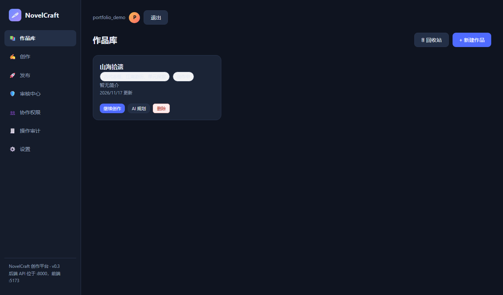
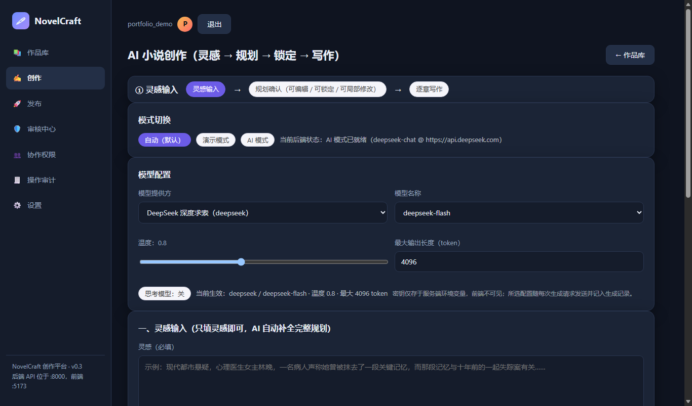
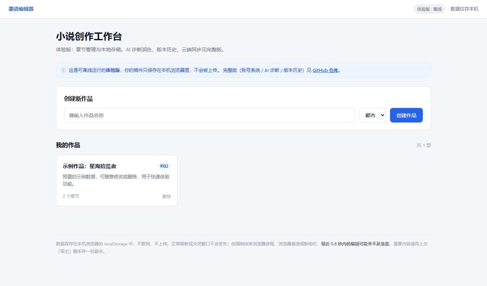
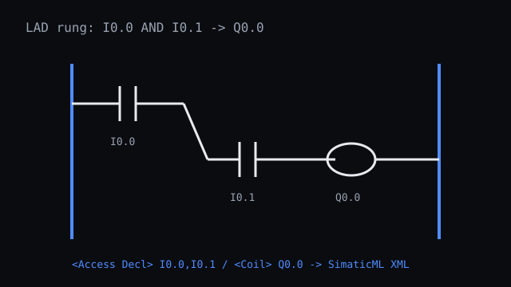

三个从需求到上线独立完成的项目：AI 写作平台、写作质检工具、西门子 PLC 梯形图生成器。全部有数据库设计、自动化测试、运维脚本与公开文档。


FastAPI + React 前后端分离。大纲、章节、人物、世界观、伏笔全链路管理，AI 流式生成可随时取消。

Next.js 16 全栈。面向网文作者的 AI 诊断与润色：套话检测、模板化表达评分、文风档案。

逻辑图自动生成 SimaticML XML，经 TIA Openness API 导入西门子软件。